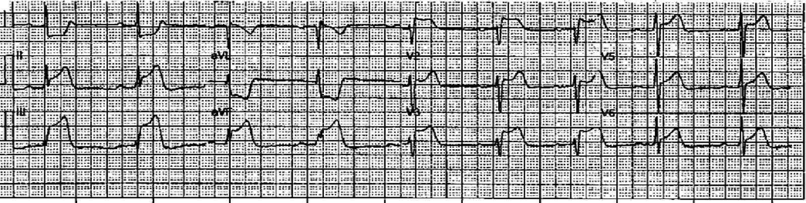
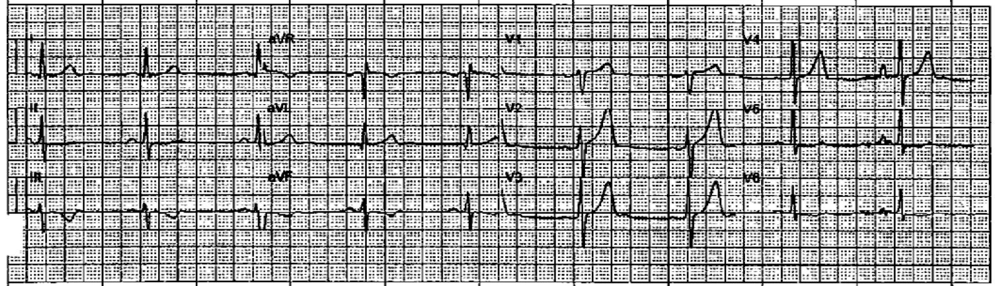
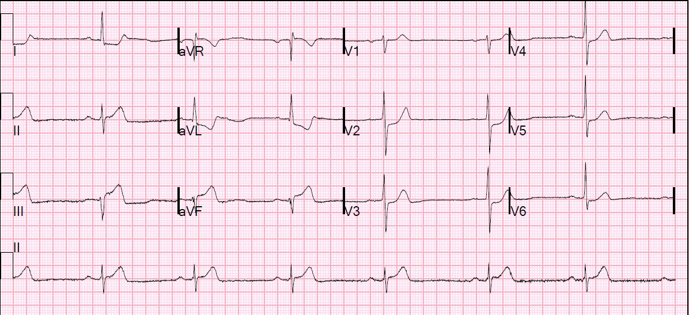
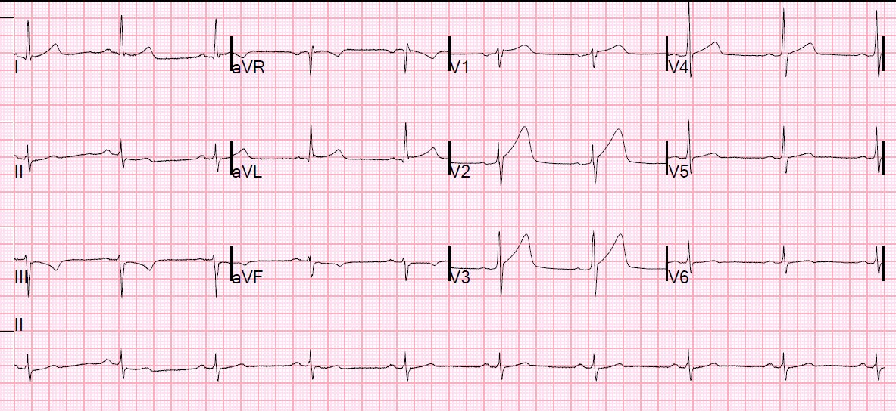
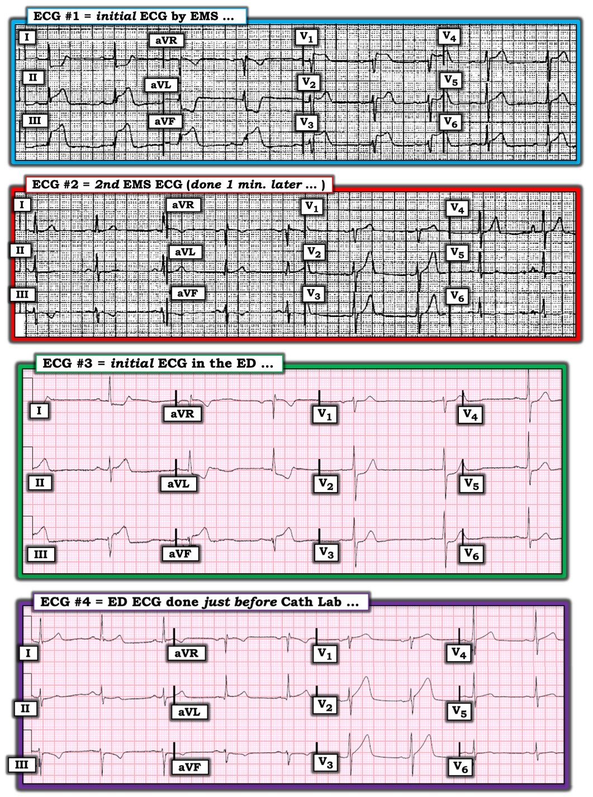

07/10/2019 — Nam giới 40 mấy tuổi bị “co giật”, hạ huyết áp và nhịp chậm
Bản dịch tiếng Việt của bài "A 40-Something male with a “Seizure,” Hypotension, and Bradycardia" – Dr. Smith’s ECG Blog. Giữ nguyên toàn bộ 7 hình ảnh và 1 video của bản gốc.
Bài này do một trong những bác sĩ nội trú năm thứ 3 xuất sắc của chúng tôi, Aaron Robinson, viết, với một số chỉnh sửa và bình luận của Smith
Đội cấp cứu ngoài viện (EMS) được gọi đến vì một trường hợp được báo là co giật ở một nam giới 42 tuổi. Theo những người xung quanh, anh ta ngã xuống sau một hoạt động thể thao cường độ cao, và có cử động kiểu “run giật”. Anh ta cho biết bản thân và gia đình không có tiền sử co giật.
Một trong các bác sĩ fellow EMS của chúng tôi cùng một bác sĩ nội trú cấp cứu năm cuối đang trực tối hôm đó, và đến hiện trường cùng Đội Cứu hỏa. Khi các bác sĩ đến gần, bệnh nhân tái xám, vã mồ hôi và có vẻ đang sốc. Đội Cứu hỏa đo được huyết áp 60/bắt mạch (palp) và mạch 40 mấy lần/phút. Các bác sĩ nhanh chóng nhận ra đây không phải là co giật và nhiều khả năng có nguồn gốc từ tim.
Khi nhân viên cấp cứu ngoài viện đến, họ ghi điện tâm đồ 12 chuyển đạo và xác nhận các dấu hiệu sinh tồn không ổn định. Điện tâm đồ như dưới đây:


Có STEMI thành dưới rõ ràng, nhưng còn gì nữa?
Vì sao bệnh nhân bị sốc?
Ngoài STEMI thành dưới rõ ràng, còn có [người dịch: nguyên văn thiếu chữ ở đây, nhiều khả năng là “ST chênh lên”] ở khắp các chuyển đạo trước tim, đặc biệt ở V1. Bệnh nhân đang trong tình trạng sốc tim nặng.
Bình luận của Smith: Tôi nghi ngờ có đảo điện cực V2 và V3: ST chênh lên (STE) cao ở V1, thấp hơn ở V2, rồi lại cao ở V3. ST chênh lên này có giá trị chẩn đoán STEMI thất phải (nhồi máu thất phải – RV MI). Thực tế, ST chênh lên lan rộng, giống STEMI thành trước. Nó thực sự là STEMI thành trước, nhưng là của thành trước thất phải, không phải thành trước thất trái.
Khi có ST chênh lên ở thành dưới và thành trước, chẩn đoán phân biệt là:
1. nhồi máu thành dưới + nhồi máu thất phải do tắc RCA, hoặc
2. tắc LAD ở một LAD “vòng qua mỏm” (wraparound LAD — vòng qua tới thành dưới).
Trong ca này, ST chênh lên thành dưới là rõ rệt nhất, và ST chênh lên thành trước cao nhất ở V1 và V2. Cả hai đặc điểm này khiến nhồi máu thành dưới + nhồi máu thất phải là khả năng cao hơn hẳn (Nhồi máu cơ tim giả trước vách (pseudoanteroseptal MI) là một tên gọi khác của tình trạng này)
Ngoài ra còn có nhịp chậm xoang và bệnh nhân đang sốc kèm hạ huyết áp. Mặc dù sốc chắc chắn một phần là do chức năng bơm kém, với thể tích nhát bóp thấp, đặc biệt của thất phải, lẽ ra nó phải được bù trừ bằng nhịp nhanh. Cung lượng tim bằng thể tích nhát bóp x tần số, vì vậy bệnh nhân này cần tần số tim cao hơn.
Đây là một chỉ định hoàn hảo cho atropine. Atropine có thể thành công trong việc tăng tần số tim ở bất kỳ nhịp chậm QRS hẹp nào, đặc biệt là nhịp chậm xoang, nhưng cả khi có blốc AV, vì blốc AV với QRS hẹp có thể là nhịp thoát bộ nối. Một nhịp chậm QRS hẹp không có sóng P cũng nhiều khả năng đáp ứng với atropine, vì đó có thể là nhịp bộ nối.
Thiếu máu cục bộ vùng RCA thường gây nhịp chậm xoang do phản xạ phế vị hoặc do thiếu máu cục bộ nút xoang. Thực tế, trong nhồi máu thành dưới, nhịp chậm xoang có thể là thêm một bằng chứng của tắc RCA đoạn gần, vốn là vị trí tắc gây ra nhồi máu thất phải. Đây là toàn văn của bài báo này.
Ca bệnh tiếp diễn
Đội EMS lập tức vận chuyển bệnh nhân, kích hoạt phòng thông tim (cath lab) và cho 324 mg aspirin trên đường đi. Thời gian vận chuyển khoảng 7 phút. Đội EMS cũng nhanh chóng truyền 1L nước muối sinh lý (NS) để tối ưu tiền tải và hy vọng cải thiện tưới máu. Họ không có máy siêu âm trên xe cứu thương (một số kíp tại địa phương đang bắt đầu dùng siêu âm giới hạn tại giường (POC) trong khu vực phục vụ của chúng tôi).
Đội EMS ghi điện tâm đồ thứ hai một phút sau đó:


Bệnh nhân đến khu hồi sức của khoa cấp cứu và được ghi điện tâm đồ này:


Như bạn thấy, ST chênh lên đã trở lại ở các chuyển đạo thành dưới và nay có ST chênh xuống ở các chuyển đạo thành trước, đáng lo ngại có tổn thương thành sau.
Không ghi điện tâm đồ chuyển đạo bên phải. ST chênh lên ở V1 trong STEMI thành dưới có độ nhạy vừa phải đối với tổn thương thất phải, nhưng chỉ khi không có ST chênh xuống ở V2! Nếu có ST chênh xuống (STD) ở V2, ST chênh lên ở V1 có thể bình thường một cách giả tạo!
Xem bài báo này của Smith và cs..
Cần lưu ý, trái với điều thường được giảng dạy, ST chênh xuống ở chuyển đạo I KHÔNG đáng tin cậy để chẩn đoán nhồi máu thất phải.
Siêu âm tim tại giường cho thấy chức năng tâm thu giảm toàn bộ.
Ngoài ra, thất phải có vẻ lớn và giảm động
Bệnh nhân liên tục có các cơn ngất tái diễn tại khoa cấp cứu và sau đó được đặt nội khí quản để ổn định và bảo vệ đường thở trước khi chuyển lên phòng thông tim. Trước khi chuyển, một điện tâm đồ cuối cùng được ghi:


Bệnh nhân được đưa lên phòng thông tim và được can thiệp cấp cứu:
Hẹp do huyết khối ở RCA đoạn gần (95% kèm bằng chứng nứt vỡ
mảng xơ vữa) là thủ phạm gây STEMI thành dưới-sau của bệnh nhân. Bệnh nhân được đặt stent thành công. Điều này cũng xác nhận nhồi máu thất phải (RV MI)
Siêu âm tim qua thành ngực (TTE) theo dõi cho thấy LVEF bình thường với “rối loạn vận động thành khu trú — giảm động nhẹ vùng sau-bên, có thể có.” Troponin I đạt đỉnh 6,107 ng/mL. Bệnh nhân xuất viện với chức năng thần kinh nguyên vẹn và hồi phục rất tốt. Gia đình anh ta có tiền sử đột tử do tim. Bệnh nhân không hề ngừng tim trong thời gian nằm viện và tiên lượng tốt.
Những điểm cần học:
1. Rất dễ nhầm các cơn ngất kèm giật cơ (myoclonus) với co giật, vì vậy hãy luôn nghi ngờ cao ngất là căn nguyên. Tình trạng sốc của bệnh nhân lúc đội cấp cứu đến không phù hợp với co giật và điều đó đã được nhận ra nhanh chóng.
2. Nhận diện STEMI thất phải dựa vào nhồi máu thành dưới kèm sốc (và phổi trong), nhịp chậm xoang, và ST chênh lên ở chuyển đạo V1 (nhưng cũng có thể ở V2 và xa hơn, với ST chênh lên tối đa ở V1 và V2).
3. ST chênh lên ở V1 trong nhồi máu thành dưới có độ nhạy vừa phải đối với nhồi máu thất phải (nếu không có nhồi máu thành sau “kéo đoạn ST xuống”). Thêm vào đó, ST chênh lên ở V1 trong nhồi máu thành dưới rất đặc hiệu cho nhồi máu thất phải.
4. Nếu thời gian cho phép, điện tâm đồ chuyển đạo bên phải có thể giúp nhận diện nhồi máu thất phải, nhưng ngay cả điện tâm đồ này cũng có thể âm tính giả khi có nhồi máu thành sau (xem bên dưới).
5. Cho atropine khi có nhịp chậm QRS hẹp kèm hạ huyết áp.
6. Truyền dịch nhanh (bolus) lượng vừa phải khi hạ huyết áp trong nhồi máu thất phải
7. Cho norepinephrine khi hạ huyết áp dù đã truyền dịch nhanh lượng vừa phải.
Tôi (bác sĩ nội trú năm cuối có mặt tại hiện trường cùng bác sĩ fellow EMS) đã trao đổi với Dr. Smith về ca này. Trong lúc vận chuyển, tôi đã cân nhắc cho atropine vì nhịp chậm và sốc tim của bệnh nhân, nhưng lo ngại làm một trái tim vốn đã thiếu máu cục bộ nặng càng thiếu máu cục bộ hơn, nên thay vào đó đã chọn tối ưu tiền tải bằng cách bóp túi áp lực truyền 1L nước muối sinh lý. Dr. Smith chỉ ra rằng tuy atropine có thể làm tăng nhu cầu oxy đôi chút, nhưng việc tăng cung lượng tim và tăng huyết áp sẽ làm tăng tưới máu mạch vành nói chung và giảm thiếu máu cục bộ. Điều này đặc biệt đúng với nhồi máu thất phải: tưới máu mạch vành của thất trái phụ thuộc vào áp lực tâm trương vì áp lực trong cơ tim quá cao để có thể tưới máu trong thì tâm thu. Nhưng áp lực tâm thu thất phải thấp, nên thất phải được tưới máu trong CẢ thì tâm thu lẫn tâm trương. Huyết áp động mạch trung bình cao hơn giúp cải thiện tưới máu thất phải. Norepinephrine có thể là biện pháp hỗ trợ rất hữu ích trong sốc do nhồi máu thất phải, vì hạ huyết áp gây hại rất nhiều cho tưới máu thất phải.
Vì vậy, khi lại gặp tình huống này ở môi trường trước viện, tôi sẽ cho atropine.
V4R trong nhồi máu thất phải
Tương tự như nghiên cứu của Smith về chuyển đạo V1 trong nhồi máu thất phải (RVMI), Kosuge và cs. đã nghiên cứu chuyển đạo V4R trong bối cảnh có tổn thương thành sau và nhận thấy nhồi máu thất phải liên quan với tỷ lệ cao ST chênh lên ở V4R khi không có, nhưng không phải khi có, nhồi máu thành sau. ST chênh lên ở V4R có độ nhạy lần lượt là 34% và 96% (p < 0,001), và độ đặc hiệu 83% và 82% (không có ý nghĩa thống kê – NS) khi có và khi không có tổn thương thành sau (PWI). Họ không nghiên cứu chuyển đạo V1. Giống như nghiên cứu của chúng tôi, họ dùng tiêu chuẩn chụp mạch để xác định nhồi máu thất phải [13]
Kosuge M, Ishikawa T, Morita S, và cs. Posterior wall involvement attenuates predictive (Tổn thương thành sau làm giảm giá trị tiên đoán
value of ST-segment elevation in lead V4R for right ventricular involvement in (của ST chênh lên ở chuyển đạo này đối với tổn thương thất phải trong
inferior acute myocardial infarction. (nhồi máu cơ tim cấp thành dưới.) Tạp chí J Cardiol 2009;54(3):386–93.

===================================
BÌNH LUẬN CỦA TÔI, bởi KEN GRAUER, MD (7/10/2019):
===================================
Điều tôi thích nhất ở ca này — là việc thông tim xác nhận tắc cấp tính RCA đoạn gần là “động mạch thủ phạm” cho phép chúng ta nhận định tối ưu các diễn biến đang xảy ra trên các điện tâm đồ liên tiếp trong ca này. Như vậy — ca này mang lại cái nhìn độc đáo về sự tương tác giữa các thay đổi ST-T của thất phải so với của thành sau do tắc cấp tính — tiếp theo là tái tưới máu — tiếp theo là tắc lại …
- Để cho rõ — tôi đã ghép 4 điện tâm đồ ghi trong ca này lại với nhau trong Hình 1.


SUY NGHĨ CỦA TÔI: Trong bối cảnh tắc RCA đoạn gần cấp tính gây STEMI thành dưới cấp — rất khó dự đoán tác động tổng hợp của nhồi máu thất phải và nhồi máu thành sau xảy ra đồng thời.
- Xem trước hết Điện tâm đồ #1 — Như Dr. Smith đã nêu, có STEMI thành dưới cấp rõ ràng. Tắc RCA cấp tính là động mạch “thủ phạm” được gợi ý bởi ST chênh lên ở chuyển đạo III nhiều hơn rõ rệt so với II — và, bởi ST chênh xuống soi gương ở chuyển đạo aVL với mức độ rõ rệt tương đương.
- Cũng có ST chênh lên với mức độ tương đối khiêm tốn ở các chuyển đạo ngực bên (V4, V5, V6) của điện tâm đồ #1. Điều này có thể gặp trong tắc RCA cấp khi có các nhánh sau-bên lớn xuất phát từ nhánh PDA (động mạch liên thất sau – Posterior Descending Artery) của RCA cấp máu cho thành bên. Ngược lại, khi có nhồi máu dưới-sau-bên do tắc LCx (động mạch mũ trái – Left Circumflex) cấp — ST chênh lên ở chuyển đạo V6 thường lớn hơn ST chênh lên ở chuyển đạo III.
- Cũng có ST chênh lên rõ rệt ở các chuyển đạo V1, V2 và V3 trong điện tâm đồ #1. Trong bối cảnh STEMI thành dưới cấp, trong đó mức ST chênh lên lớn nhất thấy ở thành dưới (tức là ở các chuyển đạo III và aVF) — ST chênh lên ở thành trước này gợi ý mạnh nhồi máu thất phải cấp. Và, vì RCA chứ không phải LCx cấp máu cho thất phải (RV — Right Ventricle) — chẩn đoán nhồi máu thất phải cấp xác nhận rằng RCA là động mạch “thủ phạm”!
- ĐIỂM THEN CHỐT (PEARL): Những lý do khiến Dr. Smith nghi ngờ mạnh đảo điện cực chuyển đạo V2 với chuyển đạo V3 trong điện tâm đồ #1 gồm: i) Hình thái QRS (Chẳng phải tăng tiến sóng R sẽ hợp lý hơn nhiều NẾU chuyển đạo V3 là chuyển đạo V2 hay sao?); và, ii) Hình thái ST-T (NẾU chuyển đạo V3 là chuyển đạo V2 — Chẳng phải diễn tiến từ ST chênh lên rõ rệt ở V1, V2 do nhồi máu thất phải cấp — chuyển sang ST chênh lên khiêm tốn hơn ở V3 — sẽ hợp lý hơn nhiều về mặt sinh lý hay sao?).
- ĐIỀU CỐT LÕI: Điện tâm đồ #1 cho thấy nhịp chậm + thay đổi ST-T rõ rệt do STEMI dưới-bên cấp + nhồi máu thất phải cấp — cả hai đều là hậu quả của tắc RCA cấp. LƯU Ý: Mặc dù chúng ta biết rằng nhồi máu thành sau cấp rất thường đi kèm STEMI thành dưới cấp — chúng ta sẽ không biết là có tổn thương thành sau nếu tất cả những gì có để xem chỉ là điện tâm đồ #1.
Điện tâm đồ #2 được ghi chỉ 1 phút sau điện tâm đồ #1 …
CÂU HỎI: Sẽ thế nào nếu điện tâm đồ #1 không được ghi — và điện tâm đồ đầu tiên trong ca này là điện tâm đồ #2?
TRẢ LỜI: Nếu điện tâm đồ đầu tiên trong ca này là điện tâm đồ #2 — thì chúng ta chưa thể có chẩn đoán xác định tắc RCA cấp. Thay vào đó — tôi đã có thể nghi ngờ LAD là “thủ phạm” dựa vào các sóng T nhọn ở các chuyển đạo V1 đến V4 của điện tâm đồ #2, mà nếu không có bối cảnh của điện tâm đồ #1 thì trông giống các thay đổi tối cấp ở thành trước …
QUAY LẠI với diễn tiến tuần tự trong ca này.
Dựa trên điện tâm đồ #1 — Bạn sẽ diễn giải Điện tâm đồ #2 như thế nào?
- Như Dr. Smith đã nêu — điện tâm đồ #2 cho thấy ST chênh lên ở thành dưới mà chúng ta thấy trên điện tâm đồ #1 đã hồi phục hoàn toàn.
- Ngoài ra còn có: i) hồi phục của ST chênh xuống soi gương ở vùng bên cao (ở chuyển đạo I và aVL); ii) hồi phục của ST chênh lên ở các chuyển đạo ngực bên (V4,V5,V6); và, iii) sóng T bắt đầu đảo ngược ở chuyển đạo III và aVF. Những thay đổi này gợi ý mạnh mẽ tái tưới máu tự phát của RCA bị tắc.
- Thêm vào đó — ST chênh lên ở thành trước do nhồi máu thất phải (RV MI) cấp cũng đã hồi phục. Thay vào đó — giờ đây chúng ta thấy sóng T nhọn lên ở các chuyển đạo V1 đến V4. SUY NGHĨ CỦA TÔI: Vì các chuyển đạo thành trước cho một cái nhìn hình soi gương (mirror-image) của thành sau thất trái — hình dạng của sóng ST-T mà giờ đây chúng ta thấy ở các chuyển đạo thành trước của điện tâm đồ #2, theo tôi, phù hợp nhất với các thay đổi tái tưới máu của nhồi máu cơ tim thành sau cấp (giờ đây hiện ra được vì ST chênh lên do RV MI cấp đã hồi phục).
- ĐIỂM THEN CHỐT (PEARL): Lưu ý biên độ sóng R tăng ở chuyển đạo V2, V3 và V4 của điện tâm đồ #2 (so với điện tâm đồ #1). Điều này phù hợp với nhồi máu cơ tim thành sau đang tiến triển.
- SUY NGẪM — Chẳng phải thú vị sao khi thấy hình ảnh điện tâm đồ có thể thay đổi nhanh đến mức nào chỉ trong khoảng 1 phút (thời gian giữa điện tâm đồ #1 và #2) khi có: i) tái tưới máu cấp của động mạch “thủ phạm”; và, ii) sự tương tác giữa các lực ST-T đối nghịch nhau của nhồi máu thất phải cấp và nhồi máu thành sau cấp.
Xem xét ĐIỆN TÂM ĐỒ #3:
- Như Dr. Smith đã nêu (và so với điện tâm đồ #2) — trên điện tâm đồ #3 lại một lần nữa có ST chênh lên ở các chuyển đạo thành dưới. Điều này đi kèm với sự trở lại của các thay đổi ST-T soi gương ở các chuyển đạo bên cao (chuyển đạo I và aVL). Điều này gợi ý mạnh mẽ tắc lại của RCA.
- Mặc dù mức ST chênh lên tuyệt đối ở các chuyển đạo thành dưới của điện tâm đồ #3 không nhiều bằng trên điện tâm đồ #1 — điều đáng chú ý là, một lần nữa, mức ST chênh xuống soi gương ở chuyển đạo aVL gần như là hình đối nghịch soi gương của mức ST chênh lên mà chúng ta thấy ở chuyển đạo III của điện tâm đồ #3. Điều này phản ánh hình ảnh soi gương “kỳ diệu” của các thay đổi sóng ST-T ở chuyển đạo III và aVL, vốn rất thường gặp trong STEMI thành dưới cấp.
- Điều thú vị cần lưu ý là ở các chuyển đạo ngực của điện tâm đồ #3 — giờ đây các thay đổi của nhồi máu thành sau cấp lại chiếm ưu thế! Những thay đổi này gồm: i) tăng biên độ sóng R ở chuyển đạo V2 và V3 (so với biên độ sóng R ở các chuyển đạo này trên điện tâm đồ #1); và, ii) hình dạng ST chênh xuống “dạng bậc thềm” (shelf-like) ở chuyển đạo V2 và V3, vốn rất điển hình cho nhồi máu cơ tim thành sau cấp.
- LƯU Ý: Không hề có bất kỳ dấu hiệu nào trên điện tâm đồ #3 cho thấy chỉ ít lâu trước đó đã có tổn thương thất phải cấp …
Cuối cùng (tức là ngay trước khi bệnh nhân này được đưa vào phòng thông tim) — ĐIỆN TÂM ĐỒ #4 được ghi:
- Các thay đổi ở chuyển đạo chi một lần nữa gợi ý tái tưới máu tự phát của thành dưới (tức là hồi phục của ST chênh lên ở thành dưới và ST chênh xuống soi gương ở vùng bên cao giữa điện tâm đồ #3 và điện tâm đồ #4).
- NHƯNG ở các chuyển đạo ngực của điện tâm đồ #4 — một lần nữa lại có ST chênh lên ở các chuyển đạo V1 đến V4 (rõ nhất ở chuyển đạo V2 và V3). Vì chúng ta biết từ kết quả thông tim rằng LAD không phải là động mạch thủ phạm — điều này có nghĩa là sự trở lại của ST chênh lên ở thành trước trên điện tâm đồ #4 hẳn phải phản ánh tình trạng mất tưới máu cho thất phải.
SUY NGẪM — Vậy TẠI SAO hình dạng của sóng ST-T thành trước ở các chuyển đạo V1, V2 và V3 trên điện tâm đồ #1 lại trông khác đến thế so với trên điện tâm đồ #4? Tôi nghĩ câu trả lời là trên điện tâm đồ #1 — các thay đổi sóng ST-T ở chuyển đạo ngực trước bị chi phối bởi nhồi máu thất phải cấp. Ngược lại, đến lúc ghi điện tâm đồ #4 — chúng ta thấy một sự kết hợp giữa ST chênh lên do nhồi máu thất phải cấp + các thay đổi tái tưới máu ở thành sau (tức là chính xác điều bạn có thể mong đợi sẽ thấy nếu bạn hợp nhất hình ảnh sóng ST-T ở các chuyển đạo V1, V2 và V3 của điện tâm đồ #1 và điện tâm đồ #2)!
- Điều cốt lõi: Tôi thấy thật thú vị khi suy ngẫm về việc các thay đổi sóng ST-T có thể xảy ra nhanh đến mức nào khi có tái tưới máu tự phát, rồi sau đó là tắc lại của động mạch thủ phạm. Hình ảnh điện tâm đồ càng trở nên hấp dẫn hơn khi có sự tương tác giữa các lực điện đối nghịch nhau, như xảy ra khi nhồi máu thất phải cấp và nhồi máu thành sau tiến triển với nhịp độ khác nhau.
Chúng tôi xin CẢM ƠN Dr. Smith đã trình bày ca bệnh hấp dẫn này!